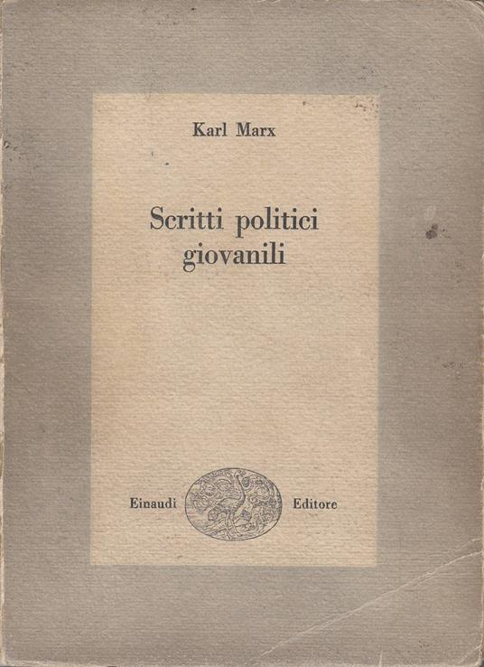
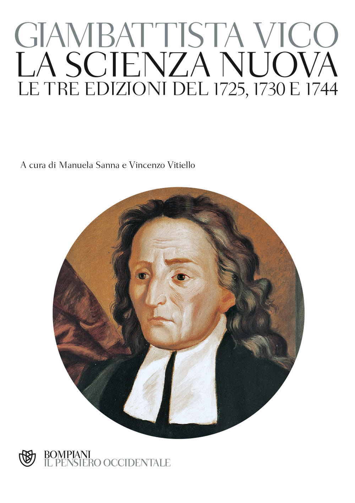
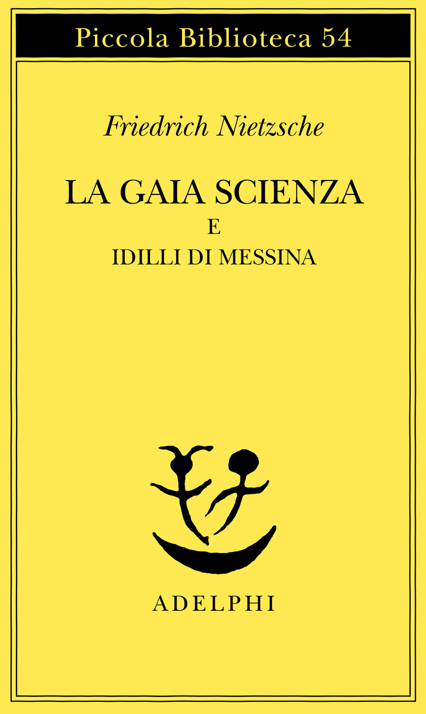

55:38 · 11 OPERE
Il tramonto del repubblicanesimo.
Il filo del discorso
Che cosa resta di una repubblica quando il cittadino viene considerato come parte di una massa da amministrare? Dr Divago parte da una frase di Montesquieu sulla sicurezza dei cittadini e da una invocazione attribuita a Jefferson affinché gli uomini di principio diventino le figure principali della vita pubblica. La domanda si allarga alla paura, alla obbedienza e alla qualità delle persone che esercitano il potere.
Leggi la sintesi completaRiduci la sintesi
Le accuse rivolte alle politiche sanitarie e ai media esprimono la sua posizione nel contesto della pandemia: la scheda distingue il problema politico della libertà dalle affermazioni mediche che richiedono dati e valutazioni specifiche. Una definizione della Treccani offre il primo riferimento: una comunità che condivide interessi e giustizia, esercita collettivamente il potere e riconosce diritti. Dr Divago ritiene che questo ideale sia già compromesso dalle disuguaglianze, che illustra attraverso la tassazione del lavoro e della finanza e il precedente marxiano della raccolta di legna. Il confronto fiscale richiede però di distinguere paesi, anni e basi imponibili, senza assumere come universali le percentuali del parlato. Metafisiche del mondo introduce anche un criterio di discussione: non accettare come inevitabile una domanda che abbia già ristretto arbitrariamente le risposte possibili. La Scienza nuova di Vico e Il tramonto dell’Occidente di Spengler trasformano poi la denuncia in una riflessione sui cicli e sulle crisi delle civiltà. Il relatore mette a confronto il declino, il peso del denaro e il ruolo dei mezzi di informazione. Schweitzer e Keynes rappresentano, nella sua lettura, avvertimenti che avrebbero potuto aprire altre possibilità dopo la Prima guerra mondiale. La tesi che ascoltarli avrebbe impedito Hitler è un ragionamento controfattuale, non un esito storico dimostrabile. Il pensiero e la cultura vengono proposti come forme di resistenza, anziché come semplici accompagnamenti di un processo inevitabile. Nietzsche occupa la seconda metà del percorso. La morte di Dio è letta come perdita di un orizzonte di significato, non come la cronaca della eliminazione fisica di una divinità. L’uomo folle della Gaia scienza e il santo incontrato da Zarathustra permettono di interrogare la distanza fra esperienza religiosa e modernità. Il tema della traduzione è centrale: il parlato propone una lettura della frase sulla frusta e richiama la fotografia con Lou Andreas-Salomé e Paul Rée. Si tratta di una possibilità interpretativa, non di un significato grammaticale unico che risolva tutti i problemi del rapporto fra Nietzsche e le donne. La conclusione affronta il modo di vivere sapendo di dover morire. I martiri cristiani, la Lettera ai Romani, un fumetto non identificato e il richiamo alla fragilità costruiscono un contrasto fra vita dotata di senso e vita ridotta a consumo e paura. Dr Divago collega infine questo svuotamento all’uomo a una dimensione di Marcuse. La risposta che propone è difendere la individualità attraverso studio, ragione e cultura. La scheda conserva questo itinerario etico e filosofico senza trasformarlo in una condanna di chi teme la morte, in una negazione dei rischi sanitari o nella prova che ogni vincolo pubblico cancelli di per sé una repubblica.
I libri nel discorso

Lo spirito delle leggi
Identificazione probabile
Note sul riferimento
Copertina: BUR · 1989 · a cura di Robert Derathé · edizione in due volumi
Immagine ufficiale dell’edizione BUR in due volumi; non mostra l’intera coppia di esemplari e non identifica l’edizione del video.
La frase sul governo nel quale un cittadino non tema un altro è riscontrabile in De l’esprit des lois, XI, 6; titolo non pronunciato.

Metafisiche del mondo
Note sul riferimento
Copertina: Copertina riprodotta nella recensione di Domenico Conversa
Metafisiche del mondo è nominato e il relatore richiama l’immagine del tramonto opposto alla alba.

Dibattiti sulla legge contro i furti di legna
Identificazione probabile
Note sul riferimento
Raccolta: Scritti politici giovanili: Fotografia della copertina di Scritti politici giovanili, Karl Marx, cura di Luigi Firpo, Einaudi, Biblioteca di cultura politica e giuridica 4, 1950, 535 pagine. Raccolta che contiene lo scritto, non volume autonomo del singolo articolo; nessun ISBN retroattribuito all’edizione del 1950.
Fotografia autentica della copertina dell’esemplare Einaudi 1950, beige e grigia, con nome Karl Marx, titolo e struzzo editoriale. Provenienza: Laboratorio del libro tramite IBS, codice commerciale 2570310170529, che non è un ISBN. Il riferimento riguarda il singolo articolo, distinto dal volume che lo contiene. L’esemplare del relatore resta non identificato.
Marx e la discussione renana sulla raccolta di legna, senza titolo pronunciato; identificazione probabile del saggio.

La Scienza nuova / Principi di scienza nuova
Note sul riferimento
Copertina della raccolta delle tre edizioni · Bompiani, 2012: Prima redazione 1725, seconda 1730, ulteriore redazione 1744. Copertina della raccolta Bompiani, Il Pensiero Occidentale, ottobre 2012, a cura di Manuela Sanna e Vincenzo Vitiello, 1504 pagine, ISBN 9788845271557, che presenta le tre edizioni. Non la prima tiratura né il primo tomo del video.
Copertina ufficiale Bompiani con sottotitolo Le tre edizioni del 1725, 1730 e 1744. Un solo volume moderno di riferimento, distinto dalla edizione storica in più tomi evocata nel filmato; il testo e la Vita non sono assegnati indiscriminatamente a tutte le redazioni.
La Scienza nuova e Vico espliciti; viene letto anche un titolo esteso e ricordato il 1725.
Il tramonto dell’Occidente
Note sul riferimento
Copertina: Nino Aragno, 2019 · volume II, seconda parte · edizione di riferimento
Il tramonto dell’Occidente di Spengler è nominato con le date 1918 e 1922 e la traduzione Longanesi.

The Decay and Restoration of Civilization
Note sul riferimento
Copertina della raccolta: Prometheus · The Philosophy of Civilization · 1987 · raccolta in inglese
Copertina della raccolta Prometheus del 1987 che contiene The Decay and Restoration of Civilization e Civilization and Ethics. I due saggi, originariamente distinti, restano voci separate. L’edizione in inglese dell’immagine non è attribuita al video.
Schweitzer e il declino della civiltà espliciti, ripresi nel confronto con la filosofia della cultura.
Le conseguenze economiche della pace
Identificazione probabile
Note sul riferimento
Copertina: Adelphi · L’oceano delle storie · 2007 · traduzione di Franco Salvatorelli
Immagine autentica dell’opera, controllata visivamente; l’edizione di riferimento non è attribuita al filmato.
Keynes e la critica alle riparazioni tedesche, senza titolo pronunciato: collegamento probabile all’opera del 1919.

La gaia scienza
Note sul riferimento
Copertina: Adelphi · La gaia scienza e Idilli di Messina
Copertina autentica controllata visivamente. Edizione di riferimento, non identificata come quella usata nel video.
La gaia scienza, la figura dello uomo folle e il paragrafo 125 sono espliciti.

Così parlò Zarathustra
Note sul riferimento
Copertina: Adelphi · Piccola Biblioteca Adelphi · riferimento
Immagine associata all’ISBN di riferimento e controllata visivamente; edizione e traduzione non identificate come quelle citate o lette nel video.
Il passo sulla frusta è dello Zarathustra, libro poi nominato esplicitamente nel confronto con il santo del prologo.

Lettera ai Romani
Note sul riferimento
Copertina della Bibbia completa · San Paolo, 2014: Libro del Nuovo Testamento distinto dalla Bibbia nel suo insieme. Copertina della Bibbia San Paolo 2014, Nuova Versione dai Testi Antichi, ISBN 9788821593246; non una edizione autonoma della Lettera. Il testo di confronto è la versione CEI sul sito vaticano, non automaticamente la stessa traduzione del volume illustrato.
Riuso dichiarato della copertina autentica del corpus biblico completo; contiene la Lettera ai Romani, ma non è un suo frontespizio o un volume autonomo. La edizione del video non è identificata. La CEI del testo online e la Nuova Versione dai Testi Antichi del volume fotografato restano distinte.
Epistola ai Romani e richiamo al versetto 6, 23 sul peccato, la morte e la vita eterna.

L’uomo a una dimensione
Note sul riferimento
Copertina: Einaudi, Piccola Biblioteca Einaudi, 1999
Copertina di un’edizione bibliografica dell’opera, con introduzione di Luciano Gallino. La citazione nel video resta probabile; questa edizione non vi è confermata.
Marcuse e L’uomo a una dimensione espliciti nel finale.